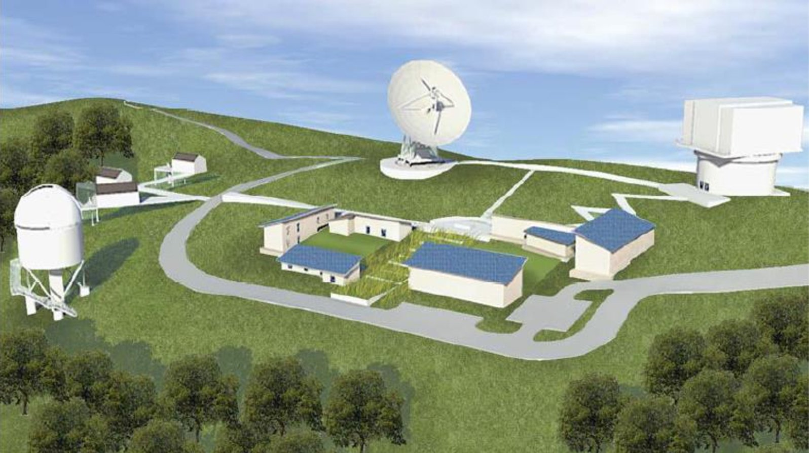
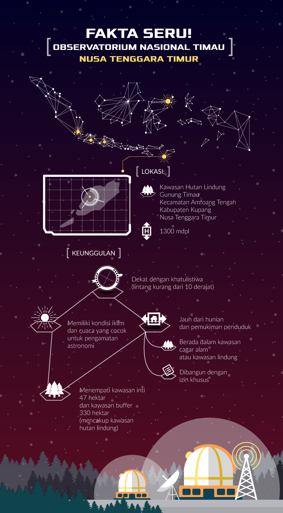
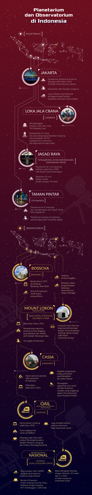

Mari berhitung sebentar...
Observatorium Bosscha dibangun pada tahun 1923. Itu artinya, enam tahun lagi Bosscha sudah berusia 100 tahun. Seiring berjalannya waktu dan semakin berkembangnya ilmu-ilmu astronomi khususnya di Indonesia, sudah saatnya Indonesia memiliki observatorium baru dan perguruan-perguruan tinggi yang mendalami bidang astronomi. Soal observatorium, bukan soal usia bangunan maupun infrastruktur di dalamnya, namun Mahasena mengungkapkan pusat pengamatan ruang angkasa memang sudah saatnya dipindahkan.
"Sekarang ini tantangannya di Bosscha adalah polusi cahaya. Tidak bisa dipungkiri ya, Lembang ini memang tempat yang komersil, bangun hotel di sini pasti laku. Maka pembangunan di Lembang semakin berkembang. Masalah polusi cahaya sebenarnya sudah dirasakan oleh astronom sejak tahun 1970-an ketika kawasan ini mulai berkembang," katanya.
Maka, para astronom dari ITB mengusulkan kepada pemerintah melalui LAPAN untuk membangun observatorium baru. Mereka sudah melakukan riset mendalam, mana wilayah yang tepat untuk dibangun observatorium.
"Kita pilih yang tempatnya itu punya jumlah malam yang cerah, artinya tidak banyak awan. Lalu berdasarkan penelitian kami, ternyata Indonesia di bagian barat itu awannya banyak sekali sedangkan di daerah timur jumlahnya sedikit. Maka, dipilihlah tempat di Nusa Tenggara Timur sana," demikian Mahasena menceritakan penetapan tempat observatorium baru yang akan dibangun di tanah seluas 30 hektar itu.

Kawasan Hutan Lindung Gunung Timau, Kupang, Nusa Tenggara Timur dipilih sebagai tempat berdirinya observatorium baru karena memiliki malam yang cerah sehingga sangat baik untuk pengamatan bintang (Foto: LAPAN)
Meski diajukan oleh ITB, namun nantinya observatorium baru ini sifatnya nasional yang akan dipegang kendalinya oleh LAPAN. Ini juga berarti observatorium baru tersebut boleh diakses oleh semua masyarakat Indonesia untuk melakukan penelitian dan pengamatan-pengamatan astronomi. Mahasena mengatakan pihaknya sudah membuat masterplan bahwa nantinya di kawasan Kupang yang menjadi tempat berdirinya observatorium baru akan dibangun juga pusat sains. Untuk masyarakat umum nantinya bisa melakukan studi astronomi di pusat sains yang berada di Kabupaten Kupang, sementara untuk aktivitas-aktivitas penelitian astronomi akan dilakukan di observatorium.
Kepala Pusat Sains dan Antariksa LAPAN, Clara Yono Yatini juga menjelaskan bahwa sejauh ini pembangunan observatorium baru masih dalam tahap perizinan. "Saya harap tahun 2017 ini proses persyaratan perizinan sudah selesai, jadi paling tidak akhir tahun pembangunan bisa dimulai," ungkap Clara kepada GNFI.
Dari pihak LAPAN sendiri sekarang masih menginkubasi teleskop yang akan dipasang di observatorium baru. Clara mengatakan, nanti di sana akan dipasang teleskop besar dengan ukuran diameter 3,8 meter yang akan jadi ikon observatorium. Sebagaimana Observatorium Bosscha yang juga punya teleskop ikonik bernama Refraktor Ganda Zeiss yang berdiameter 60 sentimeter.
"Untuk yang akan dibangun di Kupang yang diameter 3,8 meter itu sistemnya bukan tabung. Bentuknya bukan seperti yang di Bosscha melainkan pakai rangka-rangka. Kalau membayangkan yang di Bosscha itu saja sudah besar, kan.. tapi nanti ketika melihat yang 3,8 meter itu tidak sebesar itu karena menggunakan rangka," jelas Clara.
Tidak hanya teleskop besar, Clara juga mengungkapkan nantinya di observatorium baru juga akan dipasang teleskop-teleskop kecil. Saat ini ada beberapa teleskop kecil yang masih berada di LAPAN. Bila izin pembangunannya sudah keluar nanti baru dibawa ke lokasi.

Lalu bagaimana dengan Observatorium Bosscha?
Clara dan Mahasena menegaskan bahwa Bosscha masih akan tetap melakukan aktivitas pengamatan benda-benda langit, namun fokusnya lebih pada pendidikan. Sedangkan yang di Kupang nanti akan menjadi pusat penelitian-penelitian astronomi yang memerlukan resolusi tinggi karena faktor wilayah yang memiliki malam cerah.
"Bosscha masih tetap dipakai untuk pendidikan, tapi untuk penelitian lebih jauh tidak mungkin di Bosscha, bisa dilakukan di Kupang," kata Clara.
Pun sebagai laboratorium praktik bagi mahasiswa astronomi, di Sumatera juga akan dibangun observatorium yang terintegrasi dengan Institut Teknologi Sumatera (Itera). Bekerja sama dengan ITB, Itera akan membangun Observatorium Astronomi Itera Lampung (OAIL) di kawasan Taman Hutan Raya Wan Abdurrahman, Gunung Betung, Lampung.
Dikutip dari situs resmi Itera, Rektor Itera Prof. Ir. Ofyar Z. Tamin, M.Sc., Ph.D mengungkapkan kalau nanti terealisasi, observatorium ini akan menjadi observatorium yang kedua. Katanya, selain sebagai pusat observatorium teropong bintang, OAIL juga bisa menjadi tempat wisata edukasi. Pembangunan ini juga dilatarbelakangi animo masyarakat yang semakin tinggi untuk mempelajari astronomi sehingga perlu rasanya Indonesia mengembangkan banyak observatorium di berbagai kawasan di Indonesia.

{kind=link}
{kind=link}
{kind=link}
{kind=link}
{kind=link}
{kind=link}
{kind=link}